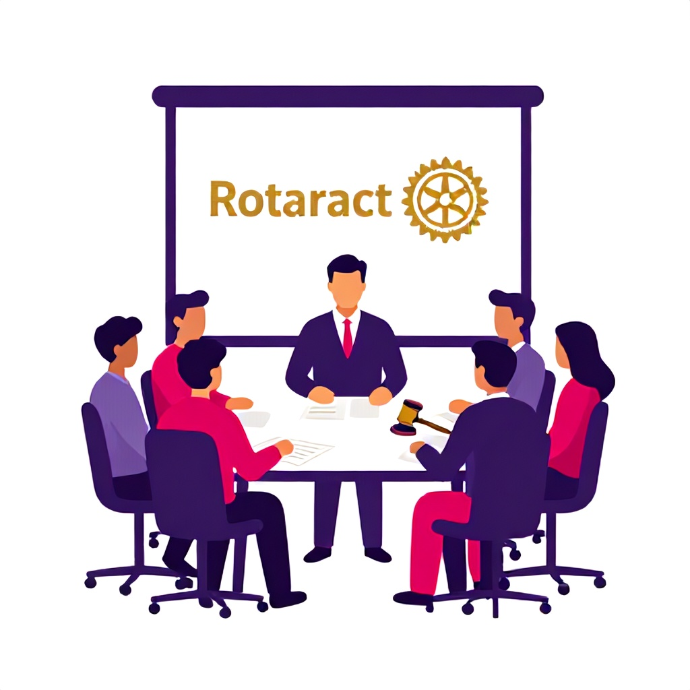

The Tutorials
Six deep-dive guides. Each one opens its own page with the full playbook, animated walkthroughs, checklists, videos and the official documents you need.

Running General Meetings
The full arc of a well-run club meeting: agenda, call to order, motions and voting, attendance and minutes that hold up.

Running Board Meetings
Every seat on the board, what a board meeting needs to cover each month, and how the board keeps the club moving between general meetings.

Club Assemblies
The meeting where the whole club plans together: goals, programs and education. How assemblies differ from board and general meetings, and how to run one.

ZRR Visits
What a Zonal Rotaract Representative visit actually is, why your club needs at least two a year, and how to host one that strengthens your club.

DRR Visits
When the District Rotaract Representative visits, it's a chance for recognition, coaching and district connection. Here's how to make it count.

Blood Donation Programs
The complete playbook for a safe, legal, well-run blood donation camp, from blood bank partnerships and donor eligibility to day-of flow and first aid.
New to leading? Start with Tutorial 01.
Every strong Zone 7 officer started somewhere. The meetings tutorial builds the foundation everything else stands on.